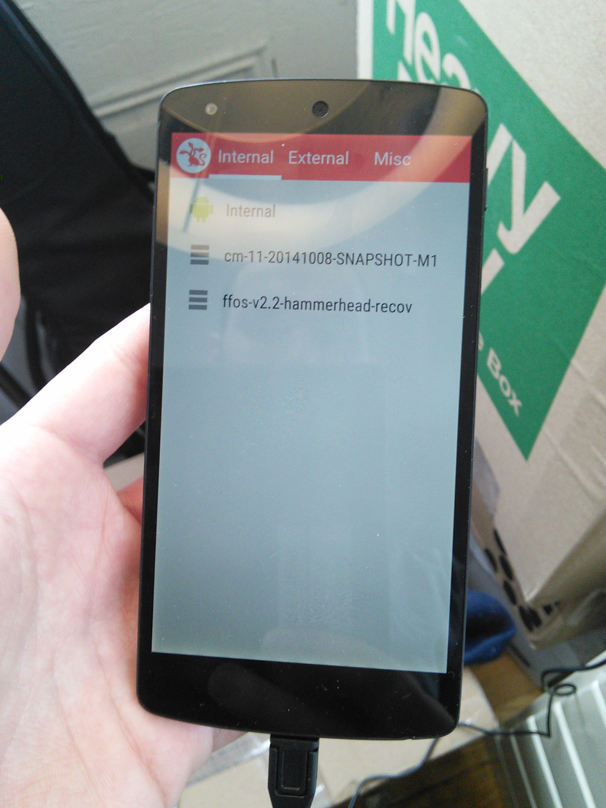
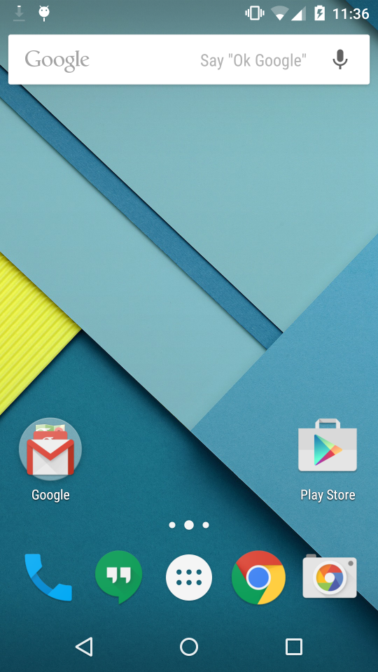
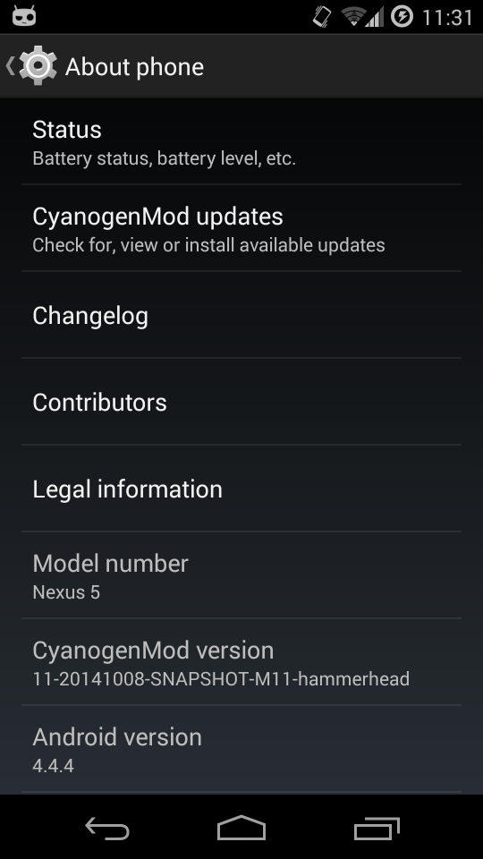
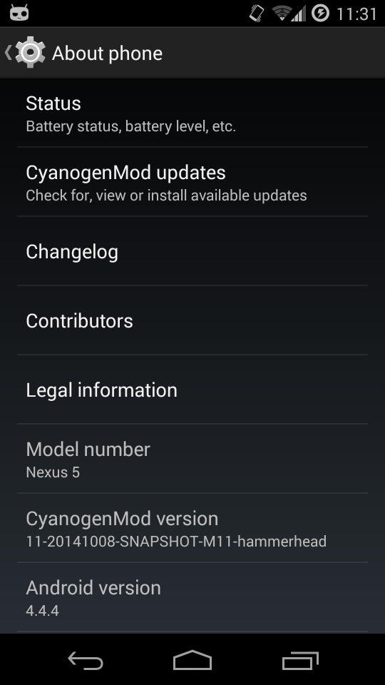

These are the steps I used to get triple-boot working on my phone. Use at your own risk.
When your device starts up, you have a choise of 3 OSes:
It will automatically boot into the first one after 5 seconds.
These steps will delete all the data on your phone, so back up whatever you need backed up.


 



Go to the Nexus factory images site, download the latest image for hammerhead (Nexus 5).
Run adb reboot bootloader on your device to reboot to the bootloader. (Or hold volume down+power when it's switched off.)
Extract the TGZ, run ./flash-all.sh. It may take awhile.
Get the CF-Auto-Root from this page. Scroll down the page, look for "hammerhead," and download that one.
Put your device back in bootloader mode. You might have to go into the phone's settings and tap the build number 5 times to enable the developer menu, then go to the developer menu, then choose "allow ADB debugging."
Unzip it, run chmod a+x root-mac.sh so you can run the script, and then run root-mac.sh. Eventually you should see a red android on your screen.
CF-Auto-Root had some bugs for me, so that it didn't actually give me root. Luckily ClockworkMod can fix this automatically. So install the ClockworkMod recovery and let it do its magic.
Go to the ClockworkMod home page, search for "nexus 5," and download the "recovery." I prefer not to use the "touch" recovery (i.e. you have to press the volume and power buttons to navigate the interface).
Put your phone back in bootloader mode, and run adb flash recovery recovery-clockwork-6.0.4.5-hammerhead.img. Then use the volume and power buttons to reboot in recovery.
In the ClockworkMod interface, simply choose "reboot system." ClockworkMod will automatically detect that the root is invalid, and will offer to fix it. Say yes.
Go to Google Play and download MultiROM. Run it and follow all the instructions. Don't uncheck any boxes. Reboot into the new MultiROM recovery.
Download the latest "snapshot" (they mean "release") version of CyanogenMod 11 for hammerhead from this page.
Mozilla doesn't do an official build for Firefox OS for Nexus 5, and it takes forever to build it yourself. Luckily this guy does a nightly build and publishes them on the Internet. Go to his download page and install the version of Firefox OS you want (I chose 2.2.0). Be sure to download the "recovery" version, not the fastboot version.
Push those two files to your sdcard. Just put them anywhere.
Reboot into recovery mode (adb reboot recovery). In the MultiROM interface, go to "Advanced," then "Add ROM." Make sure you actually chose "Add ROM" – if you choose "Install," it will overwite the existing ROM. (I made this mistake and had to redo everything >_<)
Simply choose the .zip files for CyanogenMod and follow the instructions. Do the same thing for the Firefox OS zip file.
Now you have triple-boot running! Enjoy.